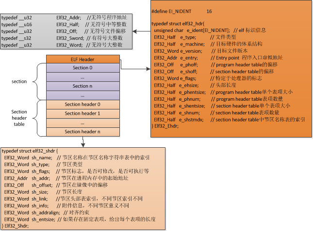
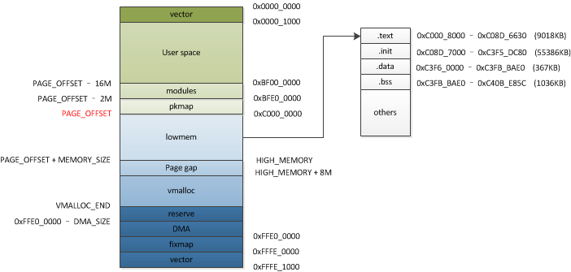
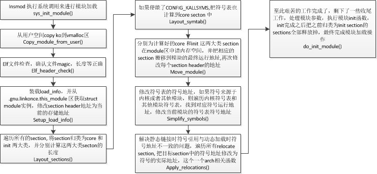

arm linux 内核模块加载过程详解¶
基础环境¶
- kernel version：3.10.70
- ARCH：arm
参考资料¶
- 《深入Linux设备驱动程序内核机制》
- 《linux设备驱动开发详解》
- http://www.cnblogs.com/xmphoenix/archive/2011/10/23/2221879.html
- http://www.cnblogs.com/LittleHann/p/3920387.html
- http://www.cnblogs.com/LittleHann/p/3871092.html
what is ko¶
Kernel modules are small pieces of compiled code which can be inserted in the running kernel, rather than being permanently built into the kernel.
ko文件在数据组织形式上是ELF(Excutable And Linking Format)格式，是一种普通的可重定位目标文件。
linux module 基本操作¶
busybox 中提供了一系列的相关的操作工具
- insmod 将模块加载到内核中
- modprobe 将模块加载到内核中并且自动处理模块间依赖关系
- lsmod 列出加载到内核中的所有模块
- depmod 更新模块间依赖关系
- rmmod 移除模块
- modinfo 查看模块信息
ELF of ko¶
为了帮助更好的理解模块符号导出，重定向等细节，有必要在这里对ELF文件做一些介绍， 下面的ELF文件格式是KO文件的映像视图。

使用 readelf 工具可以查看elf文件的详细信息
读取ko文件的ELF头,我们可以看到magic, 目标cpu架构，类型，还有一些其他信息,因为是KO文件，所以 程序头表长度为0，只有节区头表
readelf -h kdbg.ko
ELF Header:
Magic: 7f 45 4c 46 01 01 01 00 00 00 00 00 00 00 00 00
Class: ELF32
Data: 2's complement, little endian
Version: 1 (current)
OS/ABI: UNIX - System V
ABI Version: 0
Type: REL (Relocatable file)
Machine: ARM
Version: 0x1
Entry point address: 0x0
Start of program headers: 0 (bytes into file)
Start of section headers: 56788 (bytes into file)
Flags: 0x5000000, Version5 EABI
Size of this header: 52 (bytes)
Size of program headers: 0 (bytes)
Number of program headers: 0
Size of section headers: 40 (bytes)
Number of section headers: 47
Section header string table index: 44
读取节区头部表
readelf -S kdbg.ko
There are 47 section headers, starting at offset 0xddd4:
Section Headers:
[Nr] Name Type Addr Off Size ES Flg Lk Inf Al
[ 0] NULL 00000000 000000 000000 00 0 0 0
[ 1] .text PROGBITS 00000000 000034 000794 00 AX 0 0 4
[ 2] .rel.text REL 00000000 00e52c 000218 08 45 1 4
[ 3] .init.text PROGBITS 00000000 0007c8 0000c4 00 AX 0 0 4
[ 4] .rel.init.text REL 00000000 00e744 000050 08 45 3 4
[ 5] .exit.text PROGBITS 00000000 00088c 000038 00 AX 0 0 4
[ 6] .rel.exit.text REL 00000000 00e794 000018 08 45 5 4
[ 7] .note.gnu.build-i NOTE 00000000 0008c4 000024 00 A 0 0 4
[ 8] __ksymtab PROGBITS 00000024 0008e8 000008 00 A 0 0 4
[ 9] .rel__ksymtab REL 00000000 00e7ac 000010 08 45 8 4
[10] .ARM.extab PROGBITS 00000000 0008f0 000018 00 A 0 0 4
[11] .ARM.exidx ARM_EXIDX 00000000 000908 000080 00 AL 1 0 4
[12] .rel.ARM.exidx REL 00000000 00e7bc 0000a0 08 45 11 4
[13] .ARM.extab.init.t PROGBITS 00000000 000988 000000 00 A 0 0 1
[14] .ARM.exidx.init.t ARM_EXIDX 00000000 000988 000008 00 AL 3 0 4
[15] .rel.ARM.exidx.in REL 00000000 00e85c 000010 08 45 14 4
[16] .ARM.extab.exit.t PROGBITS 00000000 000990 000000 00 A 0 0 1
[17] .ARM.exidx.exit.t ARM_EXIDX 00000000 000990 000008 00 AL 5 0 4
[18] .rel.ARM.exidx.ex REL 00000000 00e86c 000010 08 45 17 4
[19] .modinfo PROGBITS 00000000 000998 00007c 00 A 0 0 4
[20] __ksymtab_strings PROGBITS 00000000 000a14 00000f 00 A 0 0 1
[21] .rodata.str1.4 PROGBITS 00000000 000a24 000250 01 AMS 0 0 4
[22] .data PROGBITS 00000000 000c74 000074 00 WA 0 0 4
[23] .rel.data REL 00000000 00e87c 000028 08 45 22 4
[24] .gnu.linkonce.thi PROGBITS 00000000 000ce8 000158 00 WA 0 0 4
[25] .rel.gnu.linkonce REL 00000000 00e8a4 000010 08 45 24 4
[26] .bss NOBITS 00000000 000e40 00003c 00 WA 0 0 4
[27] .debug_frame PROGBITS 00000000 000e40 0001e0 00 0 0 4
[28] .rel.debug_frame REL 00000000 00e8b4 000120 08 45 27 4
[29] .debug_info PROGBITS 00000000 001020 0073e4 00 0 0 1
[30] .rel.debug_info REL 00000000 00e9d4 003510 08 45 29 4
[31] .debug_abbrev PROGBITS 00000000 008404 000742 00 0 0 1
[32] .debug_loc PROGBITS 00000000 008b46 000630 00 0 0 1
[33] .rel.debug_loc REL 00000000 011ee4 000680 08 45 32 4
[34] .debug_aranges PROGBITS 00000000 009176 000030 00 0 0 1
[35] .rel.debug_arange REL 00000000 012564 000020 08 45 34 4
[36] .debug_ranges PROGBITS 00000000 0091a6 000088 00 0 0 1
[37] .rel.debug_ranges REL 00000000 012584 0000c0 08 45 36 4
[38] .debug_line PROGBITS 00000000 00922e 000997 00 0 0 1
[39] .rel.debug_line REL 00000000 012644 000018 08 45 38 4
[40] .debug_str PROGBITS 00000000 009bc5 003f70 01 MS 0 0 1
[41] .comment PROGBITS 00000000 00db35 000094 01 MS 0 0 1
[42] .note.GNU-stack PROGBITS 00000000 00dbc9 000000 00 0 0 1
[43] .ARM.attributes ARM_ATTRIBUTES 00000000 00dbc9 000031 00 0 0 1
[44] .shstrtab STRTAB 00000000 00dbfa 0001d8 00 0 0 1
[45] .symtab SYMTAB 00000000 01265c 0007b0 10 46 81 4
[46] .strtab STRTAB 00000000 012e0c 0002e4 00 0 0 1
Key to Flags:
W (write), A (alloc), X (execute), M (merge), S (strings)
I (info), L (link order), G (group), T (TLS), E (exclude), x (unknown)
O (extra OS processing required) o (OS specific), p (processor specific)
这里对部分节区做一些说明
.rel.xxxxx
对应xxxxx section的relocate表，用于符号重定位,比如说 .rel.text 就是 .text 的重定向表所在的节区
readelf -r kdbg.ko
Relocation section '.rel.text' at offset 0xe52c contains 67 entries:
Offset Info Type Sym.Value Sym. Name
00000050 00000e02 R_ARM_ABS32 00000000 .rodata.str1.4
00000054 00005802 R_ARM_ABS32 00000000 memcpy
00000058 00006902 R_ARM_ABS32 00000000 printk
0000005c 00000e02 R_ARM_ABS32 00000000 .rodata.str1.4
00000120 00006c02 R_ARM_ABS32 00000000 _ctype
00000124 00007502 R_ARM_ABS32 00000000 strlen
000001c8 00007502 R_ARM_ABS32 00000000 strlen
000001cc 00006402 R_ARM_ABS32 00000000 match_int
000001d0 00006c02 R_ARM_ABS32 00000000 _ctype
000001d4 00007302 R_ARM_ABS32 00000000 match_hex
000001fc 0000521c R_ARM_CALL 00000128 parse_interger
0000023c 00006302 R_ARM_ABS32 00000000 kallsyms_lookup_name
00000290 0000741c R_ARM_CALL 00000060 str_trim
0000029c 0000521c R_ARM_CALL 00000128 parse_interger
.symtab
模块中所有的符号记录都在这里面
readelf -s ssp.ko | more
Symbol table '.symtab' contains 53529 entries:
Num: Value Size Type Bind Vis Ndx Name
0: 00000000 0 NOTYPE LOCAL DEFAULT UND
1: 00000000 0 SECTION LOCAL DEFAULT 1
2: 00000000 0 SECTION LOCAL DEFAULT 3
3: 00000000 0 SECTION LOCAL DEFAULT 5
4: 00000000 0 SECTION LOCAL DEFAULT 7
5: 00000000 0 SECTION LOCAL DEFAULT 8
6: 00000000 0 SECTION LOCAL DEFAULT 10
7: 00000000 0 SECTION LOCAL DEFAULT 13
8: 00000000 0 SECTION LOCAL DEFAULT 23
9: 00000000 0 SECTION LOCAL DEFAULT 24
10: 00000000 0 SECTION LOCAL DEFAULT 31
11: 00000000 0 NOTYPE LOCAL DEFAULT 1 $a
12: 00000088 0 NOTYPE LOCAL DEFAULT 1 $d
13: 00000000 0 NOTYPE LOCAL DEFAULT 28 $d
14: 00000098 0 NOTYPE LOCAL DEFAULT 1 $a
15: 00000150 0 NOTYPE LOCAL DEFAULT 1 $d
16: 00000164 0 NOTYPE LOCAL DEFAULT 1 $a
.shstrtab
节区名称字符串表，所有的节区名称字符串都放在这里
readelf -p 35 ssp.ko
String dump of section '.shstrtab':
[ 1] .symtab
[ 9] .strtab
[ 11] .shstrtab
[ 1b] .rel.text
[ 25] .rel.text.unlikely
[ 38] .rel.init.text
[ 47] .rel.rodata
[ 53] .rodata.str1.4
[ 62] .rel.pv_table
[ 70] .ARM.extab.text.unlikely
[ 89] .rel.ARM.exidx.text.unlikely
[ a6] .ARM.extab.init.text
[ bb] .rel.ARM.exidx.init.text
[ d4] .ARM.extab.exit.text
[ e9] .rel.ARM.exidx.exit.text
[ 102] .modinfo
[ 10b] .ARM.extab
[ 116] .rel.data
[ 120] .rel.gnu.linkonce.this_module
[ 13e] .rel.ARM.exidx
[ 14d] .note.gnu.build-id
[ 160] .bss
[ 165] .comment
[ 16e] .note.GNU-stack
[ 17e] .ARM.attributes
.strtab
符号名称字符串表，这里记录了所有的符号的名称字符串,其格式即字符串表格式，和节区头部名称字符串表格式相同。
.gnu.linkonce.this_module
struct module 实例所在的节区
加载过程¶
使用insmod这种命令来加载内核模块时，insmod会利用文件系统的接口先将模块加载到用户空间的一段内存中，然后通过系统调用sys_init_module()来执行具体的模块加载动作。我们的加载过程分析也就是对sys_init_module的分析。在对具体代码的分析中，去掉了部分不重要的操作，一是减少代码长度，二是将关注的重点放在主要加载流程上。为了先给出一个直观的认识，先从内存静态视图的角度来讲述ko在内存中的搬移过程，然后通过一个简单流程图来讲述大致的软件流程，最后针对具体代码来讲述加载过程，在结合具体代码的过程中，在结合代码的过程中，遵循代码执行的顺序，但只会列出部分细节处理的代码，对于整体的函数调用流程在文档中不再赘述，大家可以直接去看源码。
从内存静态视图看模块加载¶
为了更容易讲明白内核模块的加载流程，这里从内存静态视图的角度粗略的来讲述ko在内存中的搬移过程，这样可能会有一个直观的感受，
arm virtual memory layout 
首先insmod会通过文件系统将ko读到 user space的一块内存中，然后调用系统调用sys_init_module,这时，内核在vmalloc区分配与ko文件大小相同的内存来暂存ko文件，暂存好之后解析ko文件，将文件中的各个section分配到init 段和core 段，在modules区为init段和core段分配内存，并把对应的section copy到modules区最终的运行地址，经过relocate函数地址等操作后，就可以执行ko的init操作了，这样一个ko的加载流程就结束了，同时，init段会被释放掉，仅留下core段来运行。
简要加载流程图¶
通过简要加载流程，可以大致清楚软件都做了哪些工作

详细加载过程¶
sys_init_module的实现
linux-3.10.70\kernel\module.c
/**
* @brief 系统调用 sys_init_module 的参数定义
* @param umod 用户空间 ko 模块起始地址
* @param len ko模块大小
* @param uargs 传给模块的参数在用户空间下的地址
*/
SYSCALL_DEFINE3(init_module, void __user *, umod,
unsigned long, len, const char __user *, uargs)
{
struct load_info info = { };
/* 通过vmalloc在vmalloc区分配内存空间，将内核模块copy到此空间，
info->hdr 直接指向此空间首地址，也就是ko的elf header */
copy_module_from_user(umod, len, &info);
// 模块加载的核心处理方法,所有的操作都在这里完成
return load_module(&info, uargs, 0);
}
load_module()
模块加载的核心处理，在这里完成了模块的搬移，重定向等艰苦的过程。在讲述这个过程之前，需要先了解内核模块相关的两个重要结构体， struct load_info 和 struct module
struct load_info
load_info类似于 ko 文件的一个句柄（用抽象来描述感觉不太恰当，又想不出什么好的形容词）, 其中包含了ko文件加载过程中的所有有用信息
linux-3.10.70\kernel\module.c
struct load_info {
Elf_Ehdr *hdr; // ELF文件头
unsigned long len; // 文件长度，似乎除了校验的时候用了一下，再也没用过
Elf_Shdr *sechdrs; // 节区头部表
char *secstrings, *strtab; // section 名称表， 字符名称表
unsigned long symoffs, stroffs; // 符号表，字符串表在最终core section中的偏移
struct _ddebug *debug;
unsigned int num_debug;
bool sig_ok;
#ifdef CONFIG_KALLSYMS
unsigned long mod_kallsyms_init_off;
#endif
/*sym 为符号表在secton headers 中的index
*str 为字符串表在section header 中的index
*/
struct {
unsigned int sym, str, mod, vers, info, pcpu;
} index;
};
struct module是内核对模块的抽象，是内核用来管理加载的模块的核心数据结构，如下代码在源码基础上进行了部分裁剪，以便减小篇幅
linux-3.10.70\include\linux\module.h
struct module {
// 用来记录模块加载过程中不同阶段的状态
enum module_state state;
/* Member of list of modules */
// 可以看到内核使用链表来管理module
struct list_head list;
/* Unique handle for this module */
/* 模块名称 */
char name[MODULE_NAME_LEN];
/* Sysfs stuff. */
struct module_kobject mkobj;
struct module_attribute *modinfo_attrs;
const char *version;
const char *srcversion;
struct kobject *holders_dir;
/* Exported symbols */
// 模块导出符号的起始地址
const struct kernel_symbol *syms;
// 模块导出符号的校验码起始地址
const unsigned long *crcs;
unsigned int num_syms;
/* Kernel parameters. */
// 内核模块参数所在的起始地址
struct kernel_param *kp;
unsigned int num_kp;
/* GPL-only exported symbols. */
unsigned int num_gpl_syms;
const struct kernel_symbol *gpl_syms;
const unsigned long *gpl_crcs;
/* symbols that will be GPL-only in the near future. */
const struct kernel_symbol *gpl_future_syms;
const unsigned long *gpl_future_crcs;
unsigned int num_gpl_future_syms;
/* Startup function. */
// 这就是我们用module_init(xxx)来声明的入口函数
int (*init)(void);
/* If this is non-NULL, vfree after init() returns */
void *module_init;
/* Here is the actual code + data, vfree'd on unload. */
void *module_core;
/* Here are the sizes of the init and core sections */
unsigned int init_size, core_size;
/* The size of the executable code in each section. */
unsigned int init_text_size, core_text_size;
/* Size of RO sections of the module (text+rodata) */
unsigned int init_ro_size, core_ro_size;
/* Arch-specific module values */
struct mod_arch_specific arch;
unsigned int taints; /* same bits as kernel:tainted */
#ifdef CONFIG_KALLSYMS
/*
* We keep the symbol and string tables for kallsyms.
* The core_* fields below are temporary, loader-only (they
* could really be discarded after module init).
*/
Elf_Sym *symtab, *core_symtab;
unsigned int num_symtab, core_num_syms;
char *strtab, *core_strtab;
/* Section attributes */
struct module_sect_attrs *sect_attrs;
/* Notes attributes */
struct module_notes_attrs *notes_attrs;
#endif
/* The command line arguments (may be mangled). People like
keeping pointers to this stuff */
char *args;
#ifdef CONFIG_MODULE_UNLOAD
/* What modules depend on me? */
struct list_head source_list;
/* What modules do I depend on? */
struct list_head target_list;
/* Who is waiting for us to be unloaded */
struct task_struct *waiter;
/* Destruction function. */
void (*exit)(void);
struct module_ref __percpu *refptr;
#endif
}
setup_load_info()
setup_load_info()加载struct load_info 和 struct module, rewrite_section_headers 将每个section的sh_addr修改为当前镜像所在的内存地址， section 名称字符串表地址的获取方式是从ELF头中的e_shstrndx获取到节区头部字符串表的标号，找到对应section在ELF文件中的偏移，再加上ELF文件起始地址就得到了字符串表在内存中的地址。struct module的实例mod是通过“.gnu.linkonce.this_module”这个section来获取的。 我们找到模块的编译目录，会找到一个xxx.mod.c的文件
struct module __this_module
__attribute__((section(".gnu.linkonce.this_module"))) = {
.name = KBUILD_MODNAME,
.init = init_module,
#ifdef CONFIG_MODULE_UNLOAD
.exit = cleanup_module,
#endif
.arch = MODULE_ARCH_INIT,
};
其中的__attribute__((section(".gnu.linkonce.this_module")))就把这个实例链接到了对应的节区中
/*
* Set up our basic convenience variables (pointers to section headers,
* search for module section index etc), and do some basic section
* verification.
*
* Return the temporary module pointer (we'll replace it with the final
* one when we move the module sections around).
*/
static struct module *setup_load_info(struct load_info *info, int flags)
{
unsigned int i;
int err;
struct module *mod;
/* Set up the convenience variables */
info->sechdrs = (void *)info->hdr + info->hdr->e_shoff;
info->secstrings = (void *)info->hdr
+ info->sechdrs[info->hdr->e_shstrndx].sh_offset;
err = rewrite_section_headers(info, flags);
if (err)
return ERR_PTR(err);
/* Find internal symbols and strings. */
for (i = 1; i < info->hdr->e_shnum; i++) {
if (info->sechdrs[i].sh_type == SHT_SYMTAB) {
info->index.sym = i;
info->index.str = info->sechdrs[i].sh_link;
info->strtab = (char *)info->hdr
+ info->sechdrs[info->index.str].sh_offset;
break;
}
}
info->index.mod = find_sec(info, ".gnu.linkonce.this_module");
if (!info->index.mod) {
printk(KERN_WARNING "No module found in object\n");
return ERR_PTR(-ENOEXEC);
}
/* This is temporary: point mod into copy of data. */
mod = (void *)info->sechdrs[info->index.mod].sh_addr;
if (info->index.sym == 0) {
printk(KERN_WARNING "%s: module has no symbols (stripped?)\n",
mod->name);
return ERR_PTR(-ENOEXEC);
}
info->index.pcpu = find_pcpusec(info);
/* Check module struct version now, before we try to use module. */
if (!check_modstruct_version(info->sechdrs, info->index.vers, mod))
return ERR_PTR(-ENOEXEC);
return mod;
}
layout_sections() 负责将section 归类为 core 和 init 这两大类,为 ko 的第二次搬移做准备。为什么会有第二次搬移呢？直接copy到实际运行地址不是更省去了很多麻烦吗？实际上，第一次copy到vmalloc区类似于一个暂存操作，ko中的绝大多数section会被搬移到最终的module区，但也有部分section以及ELF header不需要到最终的module区，而且与初始化相关的init段在模块初始化完成之后也没有任何作用，这些占用的内存最终可以被释放掉，精致的内核当然会去做这些操作。因此便需要二次搬移。在为那些需要移动的section分配内存空间之前，内核需要找出哪些section需要移动，layout_sections会遍历所有的section header, 根据sh_flags这个字段来判定对应的section是否需要搬移，并且归为哪种类型。sh_flags最终被划分为4种类型，code, read-only, read-write data, small data。任何标记了SHF_ALLOC的section都属于这四类中的一类，对应每一类layout_sections都会遍历section header table中的每一个成员。将节区名称不带".init"的归为core类，长度统计在mod->core_size，把节区名称带".init"的归为init类,长度统计在mod->init_size。实际上layout_sections只是对 core 类和 init 类的 size 做了统计，没有实质性的操作。值得一提的是在统计INIT section的时候，为sh_entsize添加了INIT_OFFSET_MASK标记，这是后续在搬移的时候区分INIT section 和 CORE section 的key.
/* Lay out the SHF_ALLOC sections in a way not dissimilar to how ld
might -- code, read-only data, read-write data, small data. Tally
sizes, and place the offsets into sh_entsize fields: high bit means it
belongs in init. */
static void layout_sections(struct module *mod, struct load_info *info)
{
static unsigned long const masks[][2] = {
/* NOTE: all executable code must be the first section
* in this array; otherwise modify the text_size
* finder in the two loops below */
{ SHF_EXECINSTR | SHF_ALLOC, ARCH_SHF_SMALL },
{ SHF_ALLOC, SHF_WRITE | ARCH_SHF_SMALL },
{ SHF_WRITE | SHF_ALLOC, ARCH_SHF_SMALL },
{ ARCH_SHF_SMALL | SHF_ALLOC, 0 }
};
unsigned int m, i;
for (i = 0; i < info->hdr->e_shnum; i++)
info->sechdrs[i].sh_entsize = ~0UL;
pr_debug("Core section allocation order:\n");
for (m = 0; m < ARRAY_SIZE(masks); ++m) {
for (i = 0; i < info->hdr->e_shnum; ++i) {
Elf_Shdr *s = &info->sechdrs[i];
const char *sname = info->secstrings + s->sh_name;
if ((s->sh_flags & masks[m][0]) != masks[m][0]
|| (s->sh_flags & masks[m][1])
|| s->sh_entsize != ~0UL
|| strstarts(sname, ".init"))
continue;
s->sh_entsize = get_offset(mod, &mod->core_size, s, i);
pr_debug("\t%s\n", sname);
}
/* 这里又按照四大类做了细分 */
switch (m) {
case 0: /* executable */
mod->core_size = debug_align(mod->core_size);
mod->core_text_size = mod->core_size;
break;
case 1: /* RO: text and ro-data */
mod->core_size = debug_align(mod->core_size);
mod->core_ro_size = mod->core_size;
break;
case 3: /* whole core */
mod->core_size = debug_align(mod->core_size);
break;
}
}
pr_debug("Init section allocation order:\n");
for (m = 0; m < ARRAY_SIZE(masks); ++m) {
for (i = 0; i < info->hdr->e_shnum; ++i) {
Elf_Shdr *s = &info->sechdrs[i];
const char *sname = info->secstrings + s->sh_name;
if ((s->sh_flags & masks[m][0]) != masks[m][0]
|| (s->sh_flags & masks[m][1])
|| s->sh_entsize != ~0UL
|| !strstarts(sname, ".init"))
continue;
s->sh_entsize = (get_offset(mod, &mod->init_size, s, i)
| INIT_OFFSET_MASK);
pr_debug("\t%s\n", sname);
}
switch (m) {
case 0: /* executable */
mod->init_size = debug_align(mod->init_size);
mod->init_text_size = mod->init_size;
break;
case 1: /* RO: text and ro-data */
mod->init_size = debug_align(mod->init_size);
mod->init_ro_size = mod->init_size;
break;
case 3: /* whole init */
mod->init_size = debug_align(mod->init_size);
break;
}
}
}
这个操作是可配的，通过配置选项CONFIG_KALLSYMS来选择是否启动这个操作，当开启KALLSYMS时，不光保留内核映像的所有符号，也保留模块的所有符号，因为模块符号section 本身没有SHF_ALLOC标志，所以在layout_sections中不会被划分到CORE section 或 INIT section中，layout_symtab就是把符号表和符号名称字符串表加入CORE section。 为什么是CORE section而不是 INIT section， 因为 INIT section 在初始化完成之后是要释放掉的。值得注意的是symsect->sh_flags |= SHF_ALLOC;和strsect->sh_flags |= SHF_ALLOC;这两个操作很关键，在具体的搬移的时候会用到。
static void layout_symtab(struct module *mod, struct load_info *info)
{
Elf_Shdr *symsect = info->sechdrs + info->index.sym;
Elf_Shdr *strsect = info->sechdrs + info->index.str;
const Elf_Sym *src;
unsigned int i, nsrc, ndst, strtab_size = 0;
/* Put symbol section at end of init part of module. */
symsect->sh_flags |= SHF_ALLOC;
symsect->sh_entsize = get_offset(mod, &mod->init_size, symsect,
info->index.sym) | INIT_OFFSET_MASK;
pr_debug("\t%s\n", info->secstrings + symsect->sh_name);
src = (void *)info->hdr + symsect->sh_offset;
nsrc = symsect->sh_size / sizeof(*src);
/* Compute total space required for the core symbols' strtab. */
for (ndst = i = 0; i < nsrc; i++) {
if (i == 0 ||
is_core_symbol(src+i, info->sechdrs, info->hdr->e_shnum)) {
strtab_size += strlen(&info->strtab[src[i].st_name])+1;
ndst++;
}
}
/* Append room for core symbols at end of core part. */
info->symoffs = ALIGN(mod->core_size, symsect->sh_addralign ?: 1);
info->stroffs = mod->core_size = info->symoffs + ndst * sizeof(Elf_Sym);
mod->core_size += strtab_size;
/* Put string table section at end of init part of module. */
strsect->sh_flags |= SHF_ALLOC;
strsect->sh_entsize = get_offset(mod, &mod->init_size, strsect,
info->index.str) | INIT_OFFSET_MASK;
pr_debug("\t%s\n", info->secstrings + strsect->sh_name);
}
把ko搬移到最终的运行地址就是通过这个操作了。module_alloc_update_bounds() 负责在最终运行区申请内存空间，其会调用module_alloc(), module_alloc()在module.c中实现了一个弱函数，可以由不同的arch进行改写，对于arm而言是下面这样实现的，我们就可以理解为什么arm的virtual kernel memory layout 中会有module这样一个区了。
Virtual kernel memory layout:
vector : 0xffff0000 - 0xffff1000 ( 4 kB)
fixmap : 0xfff00000 - 0xfffe0000 ( 896 kB)
vmalloc : 0xf0800000 - 0xfff00000 ( 247 MB)
lowmem : 0xc0000000 - 0xf0700000 ( 775 MB)
pkmap : 0xbfe00000 - 0xc0000000 ( 2 MB)
modules : 0xbe700000 - 0xbfe00000 ( 23 MB)
.text : 0xc0008000 - 0xc08d6630 (9018 kB)
.init : 0xc08d7000 - 0xc3f5dc80 (55836 kB)
.data : 0xc3f60000 - 0xc3fbbae0 ( 367 kB)
.bss : 0xc3fbbae0 - 0xc40be85c (1036 kB)
void *module_alloc(unsigned long size)
{
return __vmalloc_node_range(size, 1, MODULES_VADDR, MODULES_END,
GFP_KERNEL, PAGE_KERNEL_EXEC, -1,
__builtin_return_address(0));
}
申请完内存之后就是搬移了，直接memcpy。当然了搬移到新地址，各个section的sh_addr也要跟着变更,指向新的内存地址。".gnu.linkonce.this_module" 这个section也是带有SHF_ALLOC标记的，所以也要更新mod变量使其指向新地址。mod = (void *)info->sechdrs[info->index.mod].sh_addr; 这个不是在move_module()中进行操作的，但是是紧跟着move_module()进行的。至此，万里长征已经迈出了第一步，一个layout_and_allocate()过程就结束了
代码搬移完成了，但是还不能运行，为什么呢？因为符号地址没有修改，也就是说我们必须先解决静态链接时的符号引用与动态加载时实际符号地址不一致的问题。这个问题的解决分为了两步，第一步就是simplify_symbols()先修正符号表中的符号地址，第二步就是apply_relocations()，根据重定向表将所有的符号地址修改为实际加载的地址。static int move_module(struct module *mod, struct load_info *info) { int i; void *ptr; /* Do the allocs. */ ptr = module_alloc_update_bounds(mod->core_size); /* * The pointer to this block is stored in the module structure * which is inside the block. Just mark it as not being a * leak. */ kmemleak_not_leak(ptr); if (!ptr) return -ENOMEM; memset(ptr, 0, mod->core_size); mod->module_core = ptr; if (mod->init_size) { ptr = module_alloc_update_bounds(mod->init_size); /* * The pointer to this block is stored in the module structure * which is inside the block. This block doesn't need to be * scanned as it contains data and code that will be freed * after the module is initialized. */ kmemleak_ignore(ptr); if (!ptr) { module_free(mod, mod->module_core); return -ENOMEM; } memset(ptr, 0, mod->init_size); mod->module_init = ptr; } else mod->module_init = NULL; /* Transfer each section which specifies SHF_ALLOC */ pr_debug("final section addresses:\n"); for (i = 0; i < info->hdr->e_shnum; i++) { void *dest; Elf_Shdr *shdr = &info->sechdrs[i]; if (!(shdr->sh_flags & SHF_ALLOC)) continue; if (shdr->sh_entsize & INIT_OFFSET_MASK) dest = mod->module_init + (shdr->sh_entsize & ~INIT_OFFSET_MASK); else dest = mod->module_core + shdr->sh_entsize; if (shdr->sh_type != SHT_NOBITS) memcpy(dest, (void *)shdr->sh_addr, shdr->sh_size); /* Update sh_addr to point to copy in image. */ shdr->sh_addr = (unsigned long)dest; pr_debug("\t0x%lx %s\n", (long)shdr->sh_addr, info->secstrings + shdr->sh_name); } return 0; }在讲述simplify_symbols()这个过程之前，先要补充几个基础知识
内核是如何导出符号的
这个大家都知道怎么用，使用 EXPORT_SYMBOL 声明一下就可以了，甚至有的人还知道 EXPORT_SYMBOL_GPL 和 EXPORT_SYMBOL_GPL_FUTURE, 我们很少去探究 EXPORT_SYMBOL 实现的原理，但在这里我们就需要简单探究一下。如果内核不支持module， 其实 EXPORT_SYMBOL 是没有任何意义的，即使导出了也无人使用，但模块的出现就使得导出符号变得有意义，我们其实在编写设备驱动的时候经常用到内核导出的符号，同时我们的一个ko可能依赖另一个ko导出的符号，在我们编译设备驱动时，即静态链接时，使用内核或其他模块的符号的情况就叫做“未解决的引用”, 那只好留到动态加载的时候解决咯。
内核导出的符号表结构有两个字段，一个是符号在内存中的地址，一个是符号名称指针， 符号名称被放在了__ksymtab_strings这个section中，以EXPORT_SYMBOL举例， 符号会被放到名为___ksymtab的section中。
linux-3.10.70\include\linux\export.h
/* 这个结构体我们要注意，它构成的表是导出符号表而不是通常意义上的符号表 */
struct kernel_symbol
{
unsigned long value; // 符号在内存中的地址
const char *name; // 符号名称
};
/* For every exported symbol, place a struct in the __ksymtab section */
#define __EXPORT_SYMBOL(sym, sec) \
extern typeof(sym) sym; \
__CRC_SYMBOL(sym, sec) \
static const char __kstrtab_##sym[] \
__attribute__((section("__ksymtab_strings"), aligned(1))) \
= VMLINUX_SYMBOL_STR(sym); \
static const struct kernel_symbol __ksymtab_##sym \
__used \
__attribute__((section("___ksymtab" sec "+" #sym), unused)) \
= { (unsigned long)&sym, __kstrtab_##sym }
#define EXPORT_SYMBOL(sym) \
__EXPORT_SYMBOL(sym, "")
#define EXPORT_SYMBOL_GPL(sym) \
__EXPORT_SYMBOL(sym, "_gpl")
#define EXPORT_SYMBOL_GPL_FUTURE(sym) \
__EXPORT_SYMBOL(sym, "_gpl_future")
这还不行，还需要链接脚本的帮助，链接器脚本把所有的目标文件中名为“__ksymtab”的 section 放在最终内核镜像的名为“__ksymtab”的section中，同时，定义了变量__start___ksymtab， __stop___ksymtab， __start___ksymtab_gpl， __start___ksymtab_gpl 等，这些在解决那些“未解决的引用”的时候就会用到这些变量
linux-3.10.70\include\asm-generic\Vmlinux.lds.h
/* Kernel symbol table: Normal symbols */ \
__ksymtab : AT(ADDR(__ksymtab) - LOAD_OFFSET) { \
VMLINUX_SYMBOL(__start___ksymtab) = .; \
*(SORT(___ksymtab+*)) \
VMLINUX_SYMBOL(__stop___ksymtab) = .; \
} \
\
/* Kernel symbol table: GPL-only symbols */ \
__ksymtab_gpl : AT(ADDR(__ksymtab_gpl) - LOAD_OFFSET) { \
VMLINUX_SYMBOL(__start___ksymtab_gpl) = .; \
*(SORT(___ksymtab_gpl+*)) \
VMLINUX_SYMBOL(__start___ksymtab_gpl) = .; \
}
在module.c中就通过下面的声明来直接使用链接器定义的这些变量
linux-3.10.70\kernel\module.c
/* Provided by the linker */
extern const struct kernel_symbol __start___ksymtab[];
extern const struct kernel_symbol __stop___ksymtab[];
extern const struct kernel_symbol __start___ksymtab_gpl[];
extern const struct kernel_symbol __stop___ksymtab_gpl[];
extern const struct kernel_symbol __start___ksymtab_gpl_future[];
extern const struct kernel_symbol __stop___ksymtab_gpl_future[];
刚才讲的是内核导出符号表，也可以理解为未解决的引用符号表，现在我们要讲符号表，这个符号表是ELF文件定义的和kernel_symbol不要混淆
其中st_name 是符号名称在符号名称字符串表中的索引值，因此是个Elf32_Word类型；st_value 是符号所在的内存地址，我们要修正的也正是这个字段
st_size 是符号大小，这个在这里似乎并没有用到；
st_info 是符号类型和绑定信息，低4位表示符号类型（STB_LOCAL局部符号，目标文件外部不可见；STB_GLOBAL全局符号，外部可见；STB_WEAK弱符号）， 高28位表示符号绑定信息（STT_NOTYPE 未知类型； STT_OBJECT数据对象；STT_FUNC 函数或其他可执行代码；STT_SECTION 段，这种符号必须是STB_LOCAL类型的，STT_FILE 文件名，一般都是该目标文件所对应的源文件名，一定是STB_LOCAL类型的并且它的st_shndx一定是SHN_ABS）,
st_shndx表示符号所在section，如果符号定义在镜像中，那么这个就表示符号所在的section在section header table中index, 如果符号不是定义在本目标中，或者一些特殊符号，这个字段有特殊含义（SHN_ABS表示符号包含了绝对值，比如文件名；SHN_COMMON表示是一个COMMON块类型，比如未初始化的全局符号；SHN_UNDEF 表示该符号未定义，即我们所说的未解决的引用）
typedef struct elf32_sym{
Elf32_Word st_name;
Elf32_Addr st_value;
Elf32_Word st_size;
unsigned char st_info;
unsigned char st_other;
Elf32_Half st_shndx;
} Elf32_Sym;
simplify_symbols()
现在我们再来看simplify_symbols， 我们可以看到遍历了整个符号表如果是特殊符号，走特殊处理，如果是非特殊符号，走default处理。
如果不是特殊符号，那么直接根据st_shndx找到符号所在的section，这时st_value已经存储了符号在section中的偏移，st_value + sh_addr 即得到符号真正的内存地址。
特殊符号我们重点关注SHN_UNDEF， 关注如何寻找未解决的符号引用。resolve_symbol_wait去内核和其他模块中通过符号名称寻址目标符号，那么我们可想而知，寻找的key即符号名称
/* Change all symbols so that st_value encodes the pointer directly. */
static int simplify_symbols(struct module *mod, const struct load_info *info)
{
Elf_Shdr *symsec = &info->sechdrs[info->index.sym];
Elf_Sym *sym = (void *)symsec->sh_addr;
unsigned long secbase;
unsigned int i;
int ret = 0;
const struct kernel_symbol *ksym;
for (i = 1; i < symsec->sh_size / sizeof(Elf_Sym); i++) {
const char *name = info->strtab + sym[i].st_name;
switch (sym[i].st_shndx) {
case SHN_COMMON:
/* We compiled with -fno-common. These are not
supposed to happen. */
pr_debug("Common symbol: %s\n", name);
printk("%s: please compile with -fno-common\n",
mod->name);
ret = -ENOEXEC;
break;
case SHN_ABS:
/* Don't need to do anything */
pr_debug("Absolute symbol: 0x%08lx\n",
(long)sym[i].st_value);
break;
case SHN_UNDEF:
ksym = resolve_symbol_wait(mod, info, name);
/* Ok if resolved. */
if (ksym && !IS_ERR(ksym)) {
sym[i].st_value = ksym->value;
break;
}
/* Ok if weak. */
if (!ksym && ELF_ST_BIND(sym[i].st_info) == STB_WEAK)
break;
printk(KERN_WARNING "%s: Unknown symbol %s (err %li)\n",
mod->name, name, PTR_ERR(ksym));
ret = PTR_ERR(ksym) ?: -ENOENT;
break;
default:
/* Divert to percpu allocation if a percpu var. */
if (sym[i].st_shndx == info->index.pcpu)
secbase = (unsigned long)mod_percpu(mod);
else
secbase = info->sechdrs[sym[i].st_shndx].sh_addr;
sym[i].st_value += secbase;
break;
}
}
return ret;
}
让我们来看一下到底是怎么找到未解决的引用的符号的。resolve_symbol_wait会调用resolve_symbol， 进而调用 find_symbol ，通过名字我们也可以知道，这就是找符号的核心了，找到了符号之后，把符号的实际地址赋值给符号表 sym[i].st_value = ksym->value;
/* Find a symbol and return it, along with, (optional) crc and
* (optional) module which owns it. Needs preempt disabled or module_mutex. */
const struct kernel_symbol *find_symbol(const char *name,
struct module **owner,
const unsigned long **crc,
bool gplok,
bool warn)
{
struct find_symbol_arg fsa;
fsa.name = name;
fsa.gplok = gplok;
fsa.warn = warn;
if (each_symbol_section(find_symbol_in_section, &fsa)) {
if (owner)
*owner = fsa.owner;
if (crc)
*crc = fsa.crc;
return fsa.sym;
}
pr_debug("Failed to find symbol %s\n", name);
return NULL;
}
EXPORT_SYMBOL_GPL(find_symbol);
来看一下each_symbol_section， 我们会发现去两个地方找了，一个是内核的导出符号表，即我们在将内核符号是如何导出的时候定义的全局变量，一个是遍历已经加载的内核模块，查找动作是在each_symbol_in_section中完成，而实际的查找动作是在回调函数中完成了，即fn,fn即find_symbol_in_section
/* Returns true as soon as fn returns true, otherwise false. */
bool each_symbol_section(bool (*fn)(const struct symsearch *arr,
struct module *owner,
void *data),
void *data)
{
struct module *mod;
static const struct symsearch arr[] = {
{ __start___ksymtab, __stop___ksymtab, __start___kcrctab,
NOT_GPL_ONLY, false },
{ __start___ksymtab_gpl, __stop___ksymtab_gpl,
__start___kcrctab_gpl,
GPL_ONLY, false },
{ __start___ksymtab_gpl_future, __stop___ksymtab_gpl_future,
__start___kcrctab_gpl_future,
WILL_BE_GPL_ONLY, false },
#ifdef CONFIG_UNUSED_SYMBOLS
{ __start___ksymtab_unused, __stop___ksymtab_unused,
__start___kcrctab_unused,
NOT_GPL_ONLY, true },
{ __start___ksymtab_unused_gpl, __stop___ksymtab_unused_gpl,
__start___kcrctab_unused_gpl,
GPL_ONLY, true },
#endif
};
if (each_symbol_in_section(arr, ARRAY_SIZE(arr), NULL, fn, data))
return true;
list_for_each_entry_rcu(mod, &modules, list) {
struct symsearch arr[] = {
{ mod->syms, mod->syms + mod->num_syms, mod->crcs,
NOT_GPL_ONLY, false },
{ mod->gpl_syms, mod->gpl_syms + mod->num_gpl_syms,
mod->gpl_crcs,
GPL_ONLY, false },
{ mod->gpl_future_syms,
mod->gpl_future_syms + mod->num_gpl_future_syms,
mod->gpl_future_crcs,
WILL_BE_GPL_ONLY, false },
#ifdef CONFIG_UNUSED_SYMBOLS
{ mod->unused_syms,
mod->unused_syms + mod->num_unused_syms,
mod->unused_crcs,
NOT_GPL_ONLY, true },
{ mod->unused_gpl_syms,
mod->unused_gpl_syms + mod->num_unused_gpl_syms,
mod->unused_gpl_crcs,
GPL_ONLY, true },
#endif
};
if (mod->state == MODULE_STATE_UNFORMED)
continue;
if (each_symbol_in_section(arr, ARRAY_SIZE(arr), mod, fn, data))
return true;
}
return false;
}
EXPORT_SYMBOL_GPL(each_symbol_section);
find_symbol_in_section执行了最终的查找，如果是普通的查找方法，那效率是不是太低了点儿，我们前面已经说过了，查找的key是符号名称，可能是个字符串匹配，但我们还是小看了内核，find_symbol_in_section中使用了二分查找法来匹配符号，难道导出符号表还是有序的？当然了，其实我们前面已经给出了可以二分查找的原因，只是没有说破，在链接脚本中在把所有的目标文件中导出的符号全部放到内核名为“__ksymtab”的section中时是这样写的：(SORT(___ksymtab+))，使用了SORT进行了排序，而且这是一个升序排列。
static bool find_symbol_in_section(const struct symsearch *syms,
struct module *owner,
void *data)
{
struct find_symbol_arg *fsa = data;
struct kernel_symbol *sym;
sym = bsearch(fsa->name, syms->start, syms->stop - syms->start,
sizeof(struct kernel_symbol), cmp_name);
if (sym != NULL && check_symbol(syms, owner, sym - syms->start, data))
return true;
return false;
}
接下来要干什么应该也很明确了，符号表都收拾好了，抓紧把所有section中的需要重定向的符号进行重定向吧。不过在这之前，我们还是需要普及一个知识，ELF文件的重定向表，只有明确了重定向表，才能理解到底是如何重定向的。这里还是基于arm来讲，其他的arch没有探究，不确定是不是如此定义的。
重定向表elf_rel
typedef struct elf32_rel {
Elf32_Addr r_offset;
Elf32_Word r_info;
} Elf32_Rel;
r_offset 指明重定位所作用的位置，是重定位表所作用的section中符号的偏移
r_info 的高24位指示了指示了重定向的符号在符号表中的index（注意是index，不是字节偏移）, 低8位指示了重定向的类型
apply_relocations
执行这个的就是apply_relocations， 最终执行的apply_relocate或apply_relocate_add是与arch有关的函数。重定位表的sh_info 指示了所作用的section在section header table中的index, 我们称之为目标section， 目标 section 的 sh_flags 一定带有SHF_ALLOC 标记， 根据重定位 section的sh_type不同，可以分为SHT_REL和SHT_RELA两种重定位section,这里我们只关注SHT_REL这一种。
static int apply_relocations(struct module *mod, const struct load_info *info)
{
unsigned int i;
int err = 0;
/* Now do relocations. */
for (i = 1; i < info->hdr->e_shnum; i++) {
unsigned int infosec = info->sechdrs[i].sh_info;
/* Not a valid relocation section? */
if (infosec >= info->hdr->e_shnum)
continue;
/* Don't bother with non-allocated sections */
if (!(info->sechdrs[infosec].sh_flags & SHF_ALLOC))
continue;
if (info->sechdrs[i].sh_type == SHT_REL)
err = apply_relocate(info->sechdrs, info->strtab,
info->index.sym, i, mod);
else if (info->sechdrs[i].sh_type == SHT_RELA)
err = apply_relocate_add(info->sechdrs, info->strtab,
info->index.sym, i, mod);
if (err < 0)
break;
}
return err;
}
重点来看arm是如何实现的relocate。遍历重定向section, 通过rel->r_info来得到符号在符号表中的index， 然后从符号表中找到对应符号，根据重定向section的sh_info找到目标section，然后根据rel->r_offset找到目标符号的运行地址存放处，然后根据不同的重定向类型修改这个地址值。这里不做具体展开，只提一点，R_ARM_PC24，R_ARM_CALL，R_ARM_JUMP24都是直接寻址的重定向类型，直接寻址长度不能超过32MB, 即符号的调用位置和存储位置之间的间隔不能超过32M, 可以通过gcc编译选项-mlong-calls来强制不产生这种重定向类型。
linux-3.10.70\arch\arm\kernel\module.c
int
apply_relocate(Elf32_Shdr *sechdrs, const char *strtab, unsigned int symindex,
unsigned int relindex, struct module *module)
{
Elf32_Shdr *symsec = sechdrs + symindex;
Elf32_Shdr *relsec = sechdrs + relindex;
Elf32_Shdr *dstsec = sechdrs + relsec->sh_info;
Elf32_Rel *rel = (void *)relsec->sh_addr;
unsigned int i;
for (i = 0; i < relsec->sh_size / sizeof(Elf32_Rel); i++, rel++) {
unsigned long loc;
Elf32_Sym *sym;
const char *symname;
s32 offset;
#ifdef CONFIG_THUMB2_KERNEL
u32 upper, lower, sign, j1, j2;
#endif
offset = ELF32_R_SYM(rel->r_info);
if (offset < 0 || offset > (symsec->sh_size / sizeof(Elf32_Sym))) {
pr_err("%s: section %u reloc %u: bad relocation sym offset\n",
module->name, relindex, i);
return -ENOEXEC;
}
sym = ((Elf32_Sym *)symsec->sh_addr) + offset;
symname = strtab + sym->st_name;
if (rel->r_offset < 0 || rel->r_offset > dstsec->sh_size - sizeof(u32)) {
pr_err("%s: section %u reloc %u sym '%s': out of bounds relocation, offset %d size %u\n",
module->name, relindex, i, symname,
rel->r_offset, dstsec->sh_size);
return -ENOEXEC;
}
loc = dstsec->sh_addr + rel->r_offset;
switch (ELF32_R_TYPE(rel->r_info)) {
case R_ARM_NONE:
/* ignore */
break;
case R_ARM_ABS32:
*(u32 *)loc += sym->st_value;
break;
case R_ARM_PC24:
case R_ARM_CALL:
case R_ARM_JUMP24:
offset = (*(u32 *)loc & 0x00ffffff) << 2;
if (offset & 0x02000000)
offset -= 0x04000000;
offset += sym->st_value - loc;
if (offset & 3 ||
offset <= (s32)0xfe000000 ||
offset >= (s32)0x02000000) {
pr_err("%s: section %u reloc %u sym '%s': relocation %u out of range (%#lx -> %#x)\n",
module->name, relindex, i, symname,
ELF32_R_TYPE(rel->r_info), loc,
sym->st_value);
return -ENOEXEC;
}
offset >>= 2;
*(u32 *)loc &= 0xff000000;
*(u32 *)loc |= offset & 0x00ffffff;
break;
case R_ARM_V4BX:
/* Preserve Rm and the condition code. Alter
* other bits to re-code instruction as
* MOV PC,Rm.
*/
*(u32 *)loc &= 0xf000000f;
*(u32 *)loc |= 0x01a0f000;
break;
case R_ARM_PREL31:
offset = *(u32 *)loc + sym->st_value - loc;
*(u32 *)loc = offset & 0x7fffffff;
break;
case R_ARM_MOVW_ABS_NC:
case R_ARM_MOVT_ABS:
offset = *(u32 *)loc;
offset = ((offset & 0xf0000) >> 4) | (offset & 0xfff);
offset = (offset ^ 0x8000) - 0x8000;
offset += sym->st_value;
if (ELF32_R_TYPE(rel->r_info) == R_ARM_MOVT_ABS)
offset >>= 16;
*(u32 *)loc &= 0xfff0f000;
*(u32 *)loc |= ((offset & 0xf000) << 4) |
(offset & 0x0fff);
break;
#ifdef CONFIG_THUMB2_KERNEL
case R_ARM_THM_CALL:
case R_ARM_THM_JUMP24:
upper = *(u16 *)loc;
lower = *(u16 *)(loc + 2);
/*
* 25 bit signed address range (Thumb-2 BL and B.W
* instructions):
* S:I1:I2:imm10:imm11:0
* where:
* S = upper[10] = offset[24]
* I1 = ~(J1 ^ S) = offset[23]
* I2 = ~(J2 ^ S) = offset[22]
* imm10 = upper[9:0] = offset[21:12]
* imm11 = lower[10:0] = offset[11:1]
* J1 = lower[13]
* J2 = lower[11]
*/
sign = (upper >> 10) & 1;
j1 = (lower >> 13) & 1;
j2 = (lower >> 11) & 1;
offset = (sign << 24) | ((~(j1 ^ sign) & 1) << 23) |
((~(j2 ^ sign) & 1) << 22) |
((upper & 0x03ff) << 12) |
((lower & 0x07ff) << 1);
if (offset & 0x01000000)
offset -= 0x02000000;
offset += sym->st_value - loc;
/*
* For function symbols, only Thumb addresses are
* allowed (no interworking).
*
* For non-function symbols, the destination
* has no specific ARM/Thumb disposition, so
* the branch is resolved under the assumption
* that interworking is not required.
*/
if ((ELF32_ST_TYPE(sym->st_info) == STT_FUNC &&
!(offset & 1)) ||
offset <= (s32)0xff000000 ||
offset >= (s32)0x01000000) {
pr_err("%s: section %u reloc %u sym '%s': relocation %u out of range (%#lx -> %#x)\n",
module->name, relindex, i, symname,
ELF32_R_TYPE(rel->r_info), loc,
sym->st_value);
return -ENOEXEC;
}
sign = (offset >> 24) & 1;
j1 = sign ^ (~(offset >> 23) & 1);
j2 = sign ^ (~(offset >> 22) & 1);
*(u16 *)loc = (u16)((upper & 0xf800) | (sign << 10) |
((offset >> 12) & 0x03ff));
*(u16 *)(loc + 2) = (u16)((lower & 0xd000) |
(j1 << 13) | (j2 << 11) |
((offset >> 1) & 0x07ff));
break;
case R_ARM_THM_MOVW_ABS_NC:
case R_ARM_THM_MOVT_ABS:
upper = *(u16 *)loc;
lower = *(u16 *)(loc + 2);
/*
* MOVT/MOVW instructions encoding in Thumb-2:
*
* i = upper[10]
* imm4 = upper[3:0]
* imm3 = lower[14:12]
* imm8 = lower[7:0]
*
* imm16 = imm4:i:imm3:imm8
*/
offset = ((upper & 0x000f) << 12) |
((upper & 0x0400) << 1) |
((lower & 0x7000) >> 4) | (lower & 0x00ff);
offset = (offset ^ 0x8000) - 0x8000;
offset += sym->st_value;
if (ELF32_R_TYPE(rel->r_info) == R_ARM_THM_MOVT_ABS)
offset >>= 16;
*(u16 *)loc = (u16)((upper & 0xfbf0) |
((offset & 0xf000) >> 12) |
((offset & 0x0800) >> 1));
*(u16 *)(loc + 2) = (u16)((lower & 0x8f00) |
((offset & 0x0700) << 4) |
(offset & 0x00ff));
break;
#endif
default:
printk(KERN_ERR "%s: unknown relocation: %u\n",
module->name, ELF32_R_TYPE(rel->r_info));
return -ENOEXEC;
}
}
return 0;
}
至此，最为艰苦的长征路完成了，剩下的都是较为轻松的工作了，关于do_init_module的操作，就不在这里做介绍了，这次加载流程解析就先到这里。